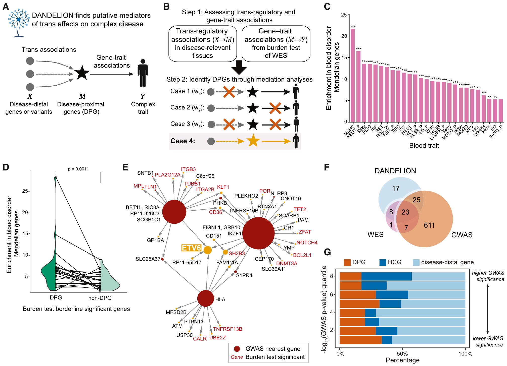
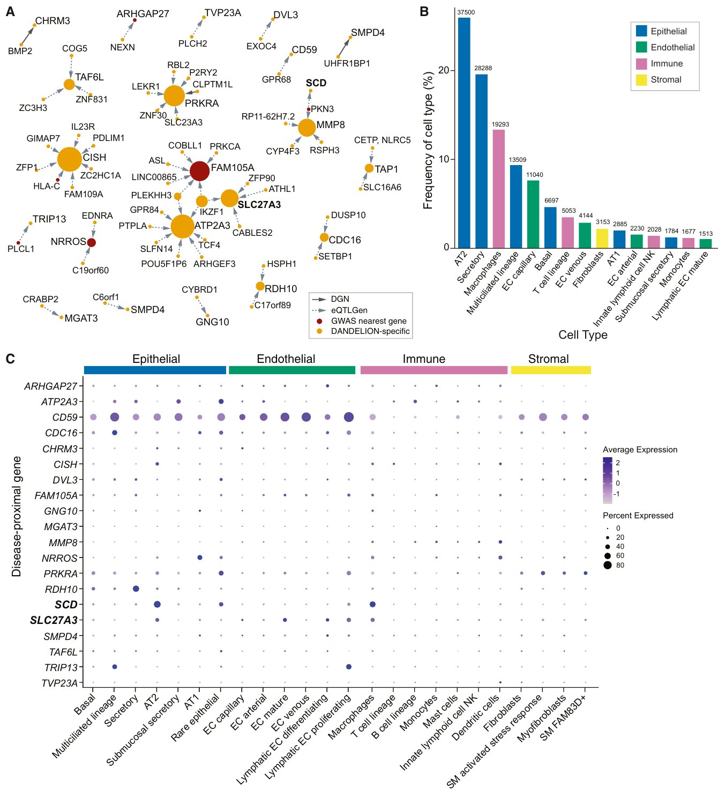
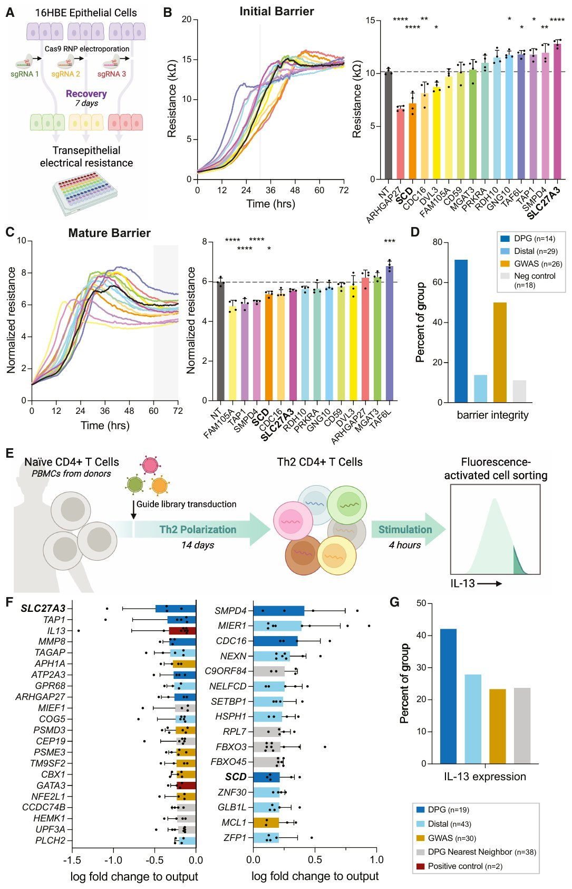
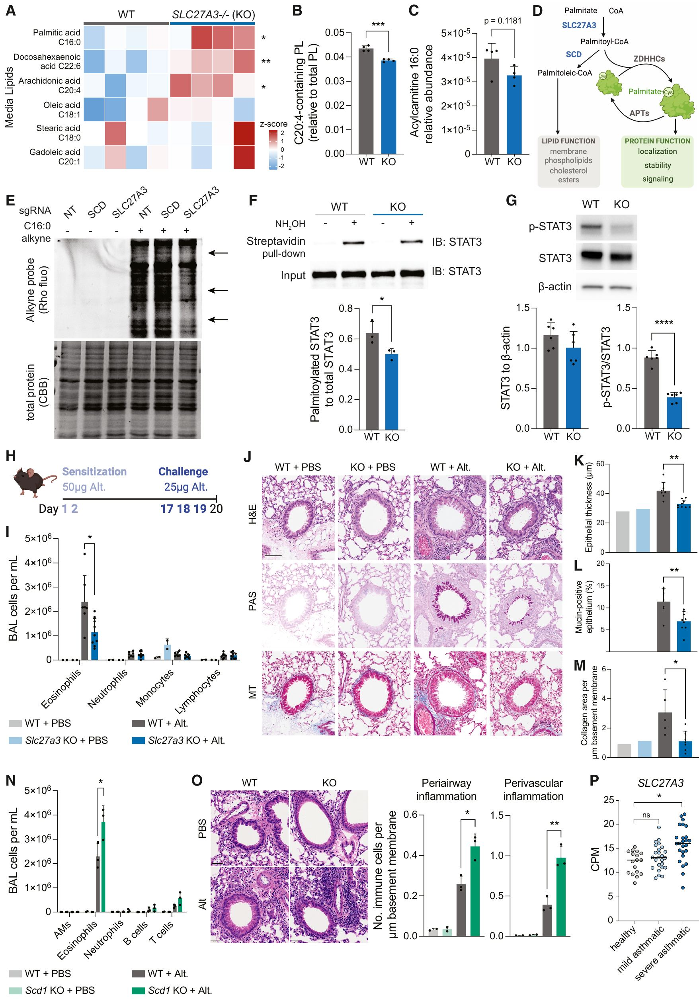

0. 阅读导引
这篇论文在做什么？
想象一场复杂疾病是由一张巨大的"调控指挥网"驱动的：绝大多数与疾病相关的基因变异位于网络的边缘，它们并不直接致病，而是通过反式调控（trans-regulation）去影响少数几个处于网络中心的"关键节点"基因，再由这些核心基因真正驱动疾病。这篇论文提出的 DANDELION 框架，就是去定位这些被 GWAS 常规手段"漏掉"的核心节点基因——作者称之为疾病近端基因（disease-proximal genes, DPG）。方法用两类证据"拼接"因果链：上游用反式调控信号（GWAS 变异如何远程影响目标基因表达），下游用全外显子组测序（WES）中罕见有害突变的负担检验（目标基因变异与疾病的关系）。最后用 CRISPR 筛选和小鼠模型验证，在哮喘中发现了一条全新的、可成药的分子通路——蛋白质棕榈酰化。
0.1 为什么这篇论文重要？
这篇论文有四个层面的贡献：
- 概念层面：把"全基因模型"（omnigenic model）中一直很抽象的"核心疾病基因"落实为可操作、可检验的定义——疾病近端基因（DPG）。
- 方法层面：提出 DANDELION——一个整合反式调控关联（trans-regulatory associations）与 WES 负担检验（gene-level burden tests）的中介启发式（mediation-inspired）统计框架，无需估计因果效应大小，仅通过 DACT 检验筛选显著中介通路。
- 验证层面：将 DPG 富集于孟德尔疾病基因（直接基因证据），并通过两轮 CRISPR 筛选（气道上皮细胞 + Th2 细胞）证明大部分 DPG 确实调节哮喘相关的细胞表型。
- 转化层面：锁定两个棕榈酰化通路酶 SLC27A3 和 SCD，并在小鼠过敏性哮喘模型中证明其调控炎症和气道重塑——为哮喘提供了全新的治疗靶点。
0.2 预备知识速览
核心概念一览
| 概念 | 说明 |
|---|---|
| 疾病近端基因（DPG, disease-proximal gene） | 处于反式调控网络中心、集中介导其他更远端疾病相关基因效应的基因。DPG 直接作用于疾病的核心生物学通路。 |
| 反式调控（trans-regulation） | 某个基因或变异调控位于不同染色体（或相距很远）的另一基因的表达。与 cis 调控（调控同一位置附近的基因）相对。 |
| 负担检验（burden test） | 将某基因内所有罕见有害变异（如 LoF + missense）聚合为一个统计量，检验该基因变异负担是否与疾病关联。常用 MAF < 1% 的 LoF+missense 变异集。 |
| 中介分析（mediation analysis） | 检验暴露 $X$ 是否通过中介变量 $M$ 影响结局 $Y$。这里 $X$ = 疾病相关变异/基因，$M$ = 候选基因表达，$Y$ = 疾病。 |
| DACT（Divide-Aggregate Composite-null Test） | 分裂-聚合复合零假设检验。把"无中介"这一复合零假设分解为三个互斥情形，分别估计其占比，再聚合出中介检验 p 值。 |
| GBAT（gene-based association test for trans-regulation） | 基于基因型的反式基因调控关联检验。先用 cvBLUP 用所有 cis-SNP 预测基因表达，再检验该预测表达与不同染色体上所有基因的关联。 |
| 棕榈酰化（palmitoylation） | 一种翻译后修饰（post-translational modification）：棕榈酸（C16:0）通过硫酯键共价连接到蛋白质的半胱氨酸残基上，调节蛋白质的运输和信号转导。 |
0.3 与已有论文的关系
| 已有论文 | 关系类型 | 说明 |
|---|---|---|
| Sanderson et al. (2022) — MR Primer | 共享基础（Shared） | 两篇论文都从遗传变异出发做因果推断。MR Primer 系统讲授了"用遗传变异做因果推断"的方法学基础，DANDELION 则把因果推断范式从"暴露→结局"推广到"变异→中介基因→结局"的三节点中介链，并给出 X→M→Y 的路径检验。 |
| Yoshiji et al. (2025) — 两步MR | 方法呼应（Complements） | 两步MR 精确量化"暴露→蛋白→疾病"单条中介通路；DANDELION 同样是两步（trans 关联 + 负担），但在基因水平做基因组范围扫描，且不估计效应大小而用 p 值排序。两者共享"两步中介"的思想骨架。 |
| Yao et al. (2025) — 卒中蛋白组MRProteome MR for Stroke | 应用互补（Complements） | 两者都是"疾病驱动分子优先级排序 + 药物靶点发现"范式：Yao 用 cis-pQTL + MR 在蛋白层面筛卒中靶点，DANDELION 用 trans 调控 + WES 负担在基因层面筛哮喘靶点，且都配以功能/动物实验验证。 |
| Larsson et al. (2023) — MR for CVD | 应用延伸（Complements） | Larsson 展示了中介 MR 在心血管领域的广度应用；DANDELION 把中介推断应用到哮喘，并在实验端闭环验证——展示了"统计中介 → 功能验证 → 机制通路"的完整链条。 |
| McAnany et al. (2026) — PISA | 同领域互补（Complements） | 两篇论文都研究基因调控与疾病，但视角不同：PISA 解读顺式调控密码（局部序列 → 功能），DANDELION 定位反式调控网络的中心节点。一"cis"一"trans"，共同覆盖了调控基因组的两个维度。 |
DANDELION 的"两步中介检验"思路与 Yoshiji et al. (2025) 两步MR 直接呼应；而它与 Yao et al. (2025) 卒中蛋白组MRProteome MR for Stroke 共同代表"遗传证据驱动的药物靶点发现"两大流派（cis 蛋白 vs trans 基因）。详见 知识图谱。
0.4 符号约定
| 符号 | 含义 |
|---|---|
| $X$ | 暴露：疾病相关的 SNP 或基因（GWAS 位点 / 远端基因） |
| $M$ | 中介：候选 DPG（基因组中的任一基因） |
| $Y$ | 结局：复杂疾病性状 |
| $p_{XM}$ | 反式调控关联 p 值（X→M，来自 trans-eQTL / GBAT） |
| $p_{MY}$ | 基因水平负担检验 p 值（M→Y，来自 WES） |
| $\text{DACT}_j$ | 候选中介 $j$ 的 DACT 统计量（聚合三类情形的加权 p 值） |
| $\pi_{\text{case}1},\pi_{\text{case}2},\pi_{\text{case}3}$ | 基因组范围估计的三种"无中介"情形的占比 |
| $\alpha$ | 中介路径系数（$X$ 通过 $M$ 影响 $Y$ 的间接效应，检验 $\alpha = 0$） |
1. 引言：从全基因模型到疾病近端基因（DPG）
1.1 复杂疾病的"全基因模型"困境
为什么 GWAS 找到几千个变异，却很难定位真正的"肇事基因"？
复杂疾病（如哮喘、冠心病）的 GWAS 已经鉴定出成千上万个关联位点。但绝大多数位点的效应量很小，且落在非编码区——它们很可能不是直接致病，而是通过反式调控网络间接影响少数几个"中心枢纽"基因。如果把疾病比喻成一场交响乐，GWAS 找到了所有演奏者，但 DANDELION 要找的是指挥。
这里涉及一个重要的理论背景——全基因模型（omnigenic model，Boyle et al. 2017）：复杂疾病几乎受到疾病相关组织中所有表达基因的影响，但绝大多数基因是"远端"（distal）的，它们通过反式调控间接作用于少数核心基因。作者定义：
疾病近端基因（Disease-proximal gene, DPG）
在反式调控网络中，集中介导其他更远端疾病相关基因效应、并直接作用于疾病核心生物学通路的基因。识别 DPG 有助于发现多基因疾病的机制通路与治疗靶点。
1.2 现有方法的三大瓶颈
为什么现有的遗传学手段都难以识别 DPG？作者分析了三类主流方法的局限：
GWAS、WES 负担检验、cis-eQTL 各自的盲区
- GWAS：天然偏向发现效应量小的常见变异；受选择压力影响，影响关键生物学通路的基因中常见变异稀少，因此 GWAS 难以命中 DPG。
- WES 负担检验：能利用罕见有害变异直接定位更"近端"的基因，但受限于队列样本量小，很多性状只能鉴定出少数几个基因。
- cis-eQTL：存在系统性差异——疾病基因通常受强选择约束，而强选择约束的基因往往没有强的 cis-eQTL 效应，导致 cis 手段到达瓶颈。
关键洞察在于：与 cis-QTL 不同，trans-QTL 的靶基因与疾病基因承受相似的选择约束（Liu et al. 2019）。因此，trans 调控信号恰恰是定位"被选择压力隐藏"的疾病驱动基因的正确通道。这正是 DANDELION 的方法论支点。
复杂疾病的遗传架构 = 大量远端基因通过 trans 调控网络作用于少数中心 DPG。GWAS / WES / cis-eQTL 各有盲区，而 trans 信号因选择约束特性，是打通"远端变异 → 中心驱动基因"的关键证据。
2. DANDELION 核心框架：两步中介检验
一句话：把"GWAS 位点 → 基因 → 疾病"拼成一条可检验的因果链
DANDELION 把疾病遗传结构建模为一条三段因果链：疾病相关的变异/基因（$X$）→ 候选 DPG（$M$）→ 疾病（$Y$）。它不需要昂贵的个体级基因型数据来估计效应大小，而是用两类现成的 p 值——反式调控关联的 p 值和 WES 负担检验的 p 值——来检验"$X$ 通过 $M$ 影响 $Y$"这条中介通路是否显著。显著通路的中间节点 $M$ 就是候选 DPG。
2.1 两条核心关联证据
对每一对（暴露 $X$，候选中介 $M$），DANDELION 组合两类统计证据：
| 关联 | 含义 | 数据来源 |
|---|---|---|
| 反式调控关联（$X \to M$） | 疾病相关变异/基因是否反式调控候选基因 $M$ 的表达 | RNA-seq / trans-eQTL 汇总统计 |
| 基因-疾病关联（$M \to Y$） | 候选基因 $M$ 的罕见有害变异负担是否与疾病关联 | WES 基因水平负担检验 |
2.2 两种实现：gene-based 与 SNP-based
两种 DANDELION 管道
| 管道 | 所需数据 | 计算方式 |
|---|---|---|
| gene-based DANDELION | 个体级基因型 + 基因表达（RNA-seq） | 用 GBAT 计算基因间 trans 关联 |
| SNP-based DANDELION | trans-eQTL 汇总统计（无需个体数据） | 直接使用现成的 trans-eQTL 关联 p 值 |
当没有个体级基因型数据时，SNP-based 管道可以从更大的联盟（如 eQTLGen，$N \approx 31{,}684$）中借用 trans-eQTL 汇总统计——样本量更大，功效更高。作者在仿真中发现，SNP-based（$N = 30{,}000$）比 gene-based（$N = 900$）功效更高，这也是主分析采用 eQTLGen 汇总统计的原因。
2.3 中介检验：DACT 给出"是否显著"的 p 值
对于给定的疾病和疾病相关变异/基因，基因组中所有基因都可作为候选中介。DANDELION 应用 DACT（Divide-Aggregate Composite-null Test）来评估每条候选中介通路的证据：
DANDELION 两步框架（Figure 1B）
- 上游（X→M）：对每个疾病相关变异/基因 $X$，计算它对每个候选基因 $M$ 的反式调控关联 p 值 $p_{XM}$。
- 下游（M→Y）：对每个候选基因 $M$，计算其 WES 负担检验 p 值 $p_{MY}$。
- 聚合：对每个候选中介 $j$，用 DACT 组合 $p_{XM}$ 与 $p_{MY}$，得到中介 p 值，检验"存在非零中介通路"。
- 定位 DPG：显著中介通路的中间节点 $M$ 被分类为 DPG；同时这些通路也揭示了连接 GWAS 位点与候选基因的反式调控网络。
下面放上原论文 Figure 1 的完整图版——概念模型（面板 A）、两步流程（面板 B）与血液性状验证证据（面板 C–G）尽收一页，可作为全篇方法的总览图：

原论文 Figure 1：DANDELION 识别血液性状中的新型 DPG（DANDELION identifies novel DPGs in blood traits）。(a) 概念模型：DANDELION 把"远端基因 → DPG → 复杂性状"建模为一条待检验的中介路径——与第 2 节的三段因果链一致。(b) 两步框架（正文 2.3，Figure 1B 引用处）：上游用反式调控关联 p 值刻画 X→M，下游用 WES 负担检验 p 值刻画 M→Y，经 DACT 聚合后把显著中介通路的中间节点定位为 DPG。(c)(d) 血液性状验证（正文 4.2，Figure 1C/1D 引用处）：DPG 显著富集于孟德尔血液疾病基因（单侧配对 Wilcoxon 检验，p < 0.01）；且在负担检验显著性水平相同的基因中，DPG 比非 DPG 更富集于孟德尔疾病基因——说明富集来自"中介性"本身，而不只是负担信号。(e) 以 ETV6 为例的反式调控网络：箭头从远端基因指向候选 DPG，红色基因名为在血小板计数（PLTC）负担检验中显著的基因。(f) DANDELION DPG 与 WES、GWAS 显著基因/位点的重叠韦恩图——DPG 集覆盖负担检验的大部分发现，并延伸到 WES/GWAS 之外（正文 4.2）。(g) 不同 GWAS 显著性档位的位点中 DPG、远端主调控因子与远端基因的占比。
图源：Salamone et al., Cell (2026)，CC BY-NC。
重要澄清：DANDELION 不做因果效应估计
尽管 DANDELION 受中介分析启发，但它不是在估计因果中介效应的大小（不估计间接效应比例），而是通过 DACT p 值排序来筛选候选 DPG。这是一种"优先级排序"工具，而非精确的因果量化工具。
"变异 → 中介 → 疾病"的三段式结构与 Yoshiji et al. (2025) 两步MR（BMI→蛋白→CAD）在思想上一脉相承；但与 MR 强调效应估计不同，DANDELION 以 p 值筛选为手段。DANDELION 在基因层面做基因组范围扫描的定位，与 Yao et al. (2025) 在蛋白层面做蛋白质组范围扫描形成互补。
DANDELION = 反式调控证据（上游） + WES 负担证据（下游） + DACT 中介检验（聚合）。以 GWAS 位点为暴露，基因组所有基因为候选中介，输出显著中介通路的中间节点作为 DPG。
3. 统计核心：DACT 分裂-聚合复合零假设检验
3.1 中介模型与四情形分解
为了说明 DACT 的零假设结构，作者使用线性结构方程模型（structural equation model）作为示意（该方法不限于线性/连续性状）：
线性结构方程示意模型
$$Y = \beta_0 + \beta_x X + \beta_M M + \beta_Z^T Z + \varepsilon$$
$$M = \gamma_0 + \gamma_X X + \gamma_Z^T Z + \varepsilon_M$$
其中 $Y$ 是疾病性状，$X$ 是暴露（SNP/基因），$M$ 是中介（候选 DPG），$Z$ 是协变量，$\varepsilon$ 为零均值常方差正态误差。是否存在中介通路，对应检验 $H_0: \alpha = 0$（$X \to M \to Y$ 的间接效应为零）。
关键技巧在于：DACT 把"无中介通路"这一复合零假设分解为三个互斥情形，每个情形对应一种独立的"信号缺失"模式：
DACT 的四情形分解
| 情形 | 条件 | 含义 |
|---|---|---|
| Case 1 | $\alpha = 0,\; \gamma_X = 0$ | X 既不影响 M，M 也不影响 Y（完全没有中介） |
| Case 2 | $\alpha = 0,\; \gamma_X \neq 0$ | X 影响 M，但 M 不影响 Y（只有上游关联） |
| Case 3 | $\alpha = 0,\; \gamma_X = 0$ | M 影响 Y，但 X 不影响 M（只有下游关联） |
| Case 4 | $\alpha \neq 0,\; \gamma_X \neq 0$ | 存在非零中介通路（DANDELION 要找的信号） |
Cases 1–3 共同构成复合零假设（无中介通路）；Case 4 对应备择假设（存在中介）。
3.2 DACT 统计量
DACT 统计量
$$\text{DACT}_j = \pi_{\text{case}1}\, p_{\text{case}1} + \pi_{\text{case}2}\, p_{\text{case}2} + \pi_{\text{case}3}\, p_{\text{case}3}$$
其中 $p_{\text{case}1}$、$p_{\text{case}2}$ 分别取反式调控关联 p 值与负担检验 p 值（对应只缺失一条链的情形），$p_{\text{case}3} = (p_{\max})^2$（$p_{\max}$ 为 MaxP 检验的 p 值，对应两条链都缺失的情形）；$\pi_{\text{case}k}$ 是从基因组范围数据中估计出的各情形占比。
为什么"加权"能检验中介？
直观上，"无中介"可以通过三种不同方式发生：要么 $X$ 和 $M$ 完全不关联，要么 $M$ 和 $Y$ 完全不关联，要么两者都关联但缺乏真正的间接效应。DACT 先按经验占比 $\pi$ 给这三种"无中介模式"加权，合成一个总体"无中介"的 p 值；如果数据强烈违背所有这些无中介模式，说明存在非零中介，从而得到显著的 DACT p 值。它像一位法官，把三种"无罪"辩护分别评估后合并裁决。
3.3 p 值校准与 FDR 控制
得到 $\text{DACT}_j$ 后，进一步做正态校准：用逆正态累积分布函数把 p 值转化为 Z 分数 $Z_j^{\text{DACT}} = \Phi^{-1}(1 - \text{DACT}_j)$，再基于经验零分布 $f_0(z)$ 的均值与标准差校准得到最终 p 值 $p_j = 1 - \Phi\left((Z_j^{\text{DACT}} - \mu)/\sigma\right)$。
FDR 控制在"每个暴露"层面，而非全局
DANDELION 将 DACT p 值转换为 q 值，并在每个暴露基因/SNP 层面控制 FDR（与近期研究一致），而非在性状（全局）层面。这意味着全局 FDR 会比 per-exposure FDR 更高——这是为保功效做出的权衡（见第 9 节局限）。
DACT 把"无中介"这一复合零假设拆成三个互斥情形（缺上游 / 缺下游 / 全缺），估计各情形占比后加权聚合，得到单个中介 p 值。显著 DACT p 值 = 存在非零中介通路，其中介节点即 DPG。
4. 仿真与血液性状验证
4.1 仿真设计：与 ARCHIE 对比
作者用仿真评估 DANDELION 相对 ARCHIE（一种基于稀疏典型相关分析、利用 trans 关联识别疾病基因集合的方法）的性能。仿真模拟了完整的中介路径：SNP 对远端基因的 cis 效应 → 远端基因对靶基因的 trans 效应 → 靶基因对疾病的直接效应。在 1000 个潜在 trans 靶基因中设定 10 个 DPG，对比两种方法的功效（识别疾病相关基因的比例）与全局 FDR。
4.2 血液性状：14–154 个 DPG/性状
对每个血液性状，对 GWAS 位点 1 Mb 范围内的每个 SNP，在 5% per-exposure FDR 下识别显著中介通路与 DPG。结果：每个性状识别出 14–154 个候选 DPG（Table S1）。
两个关键验证结论：
- 与负担检验的互补性：用 Bonferroni 阈值（0.05/20,000），负担检验在每个性状只能识别 7–65 个基因，其中 62.9%–100% 与 DANDELION DPG 重叠。DANDELION 能捕获负担检验之外的基因——通过整合 trans 介导信息。
- 孟德尔疾病基因富集（Figure 1C、1D）：DPG 在孟德尔血液疾病基因中显著富集（单侧配对 Wilcoxon 检验，$p < 0.01$）。在负担检验显著性相同的基因中，DPG 比非 DPG 显著更富集于孟德尔疾病基因——说明 DANDELION 的"中介性"筛出了真正与疾病机制更接近的基因。
DPG 的富集证据
DPG 富集于孟德尔疾病基因，且这种富集不能仅用负担检验解释（同显著性水平下 DPG 富集更强）。这提示：反式调控网络中心性与遗传病因学核心性存在真实的生物学关联。
血液性状上，DANDELION 每个性状识别 14–154 个 DPG，它们富集于孟德尔疾病基因，并捕获负担检验漏掉的基因。仿真表明其功效优于/不弱于 ARCHIE。
5. 哮喘 DPG 识别：21 个候选驱动基因
5.1 哮喘数据组合
将 DANDELION 应用于哮喘，作者组合了：
- GWAS 暴露：哮喘相关 GWAS 位点/变异（远端基因）。
- 上游 trans 信号：eQTLGen 全血 trans-eQTL 汇总统计（$N = 31{,}684$）。
- 下游负担信号：UK Biobank WES 中罕见有害变异的基因水平负担检验（LoF + missense，MAF < 1%）。
结果识别出 21 个哮喘 DPG（Figure 2A），例如：SLC27A3、SCD、TAP1、SMPD4、CDC16、MMP8、GNG10、ARHGAP27、CHRM3 等。这些基因的 trans 调控网络揭示了 GWAS 位点如何远程影响这些候选驱动基因。
下图即原论文 Figure 2 的完整图版——21 个 DPG 的反式调控网络与肺细胞表达全景：

原论文 Figure 2：DANDELION 识别新型哮喘 DPG（DANDELION identifies novel asthma DPGs）。(a) 21 个哮喘 DPG 的反式调控网络全景（正文 5.1，Figure 2A 引用处）：箭头从疾病远端基因指向候选 DPG，红色圆圈为 GWAS 全基因组显著位点的最近基因——DPG 居于网络中心、GWAS 位点散布边缘，这正是"最近基因注释"找不到它们的直观原因。(b) 哮喘 DPG 最高表达的肺细胞类型：柱色按细胞谱系（上皮/内皮/免疫/基质）区分，纵轴为细胞类型频率（%）。(c) DPG 跨肺细胞类型的表达热图：平均表达为各细胞类型中表达该基因的细胞的缩放表达（Z 分数）均值——DPG 在多个谱系的多种细胞中表达，提示跨细胞类型的多效性（正文 5.2，Figure 2B/2C 引用处）。
图源：Salamone et al., Cell (2026)，CC BY-NC。
为什么这些基因 GWAS 发现不了？
很多 DPG 并不靠近任何 GWAS 显著位点——它们处于调控网络的中心，而 GWAS 显著位点散布在网络边缘。因此，仅靠"最近基因注释"根本找不到它们；必须通过 trans 调控网络把它们与 GWAS 位点"连起来"。
5.2 细胞类型表达谱
借助人类肺细胞图谱（Human Lung Cell Atlas），作者分析了 DPG 在肺组织中的表达分布（Figure 2B、2C）：DPG 在多种肺细胞类型中表达，横跨上皮、内皮、免疫、基质等多个谱系，提示部分 DPG 可能具有跨细胞类型的多效性（pleiotropy）效应。
哮喘应用识别出 21 个 DPG，它们大多不靠近 GWAS 显著位点、但在反式调控网络中与 GWAS 位点相连，并在多种肺细胞类型中表达。
6. CRISPR 功能验证：上皮屏障与 Th2 细胞
6.1 气道上皮细胞：TEER 屏障完整性筛选
两轮 CRISPR 筛选的实验设计与完整结果汇总在下面的原论文 Figure 3（面板 A–D 为上皮细胞 TEER 筛选，E–G 为 Th2 细胞 IL-13 筛选）：

原论文 Figure 3：CRISPR 筛选识别显著影响哮喘细胞表型的 DPG（CRISPR screens identify DPGs that significantly affect asthma cellular phenotypes）。(a) 上皮细胞（16HBE）CRISPR 筛选流程概览。(b)(c) 跨上皮电阻（TEER）随时间的变化：500 Hz 通道记录初始屏障建立（灰条＝细胞初始接触时刻），4,000 Hz 通道记录归一化到 0 h 的成熟屏障（灰框），右侧柱状图为各 sgRNA 的电阻测量值——其中 SLC27A3 敲低显著抬高电阻，即最强的屏障保护表型（正文 6.1，Figure 3A–3D 引用处）。(d) 各提名类别中显著影响屏障完整性的基因占比（DPG n=14、远端基因 n=29、GWAS 候选 n=26、阴性对照 n=18）：DPG 组占比显著高于远端基因组。(e) 原代 Th2 细胞池式 CRISPR 筛选流程概览：FACS 分离 IL-13 表达最高的前 15% 细胞（正文 6.2，Figure 3E 引用处）。(f) 在 IL-13 高表达细胞中显著耗竭（左）或富集（右）的 sgRNA：阳性对照 IL13 与 GATA3 显著耗竭；DPG 中 SLC27A3、TAP1 耗竭最强，SMPD4 与远端基因 MIER1 富集最强。(g) 各提名类别中 IL-13 表达的显著命中基因占比：DPG 42.1%（8/19）最高，高于 fine-mapped GWAS 基因 23.3%、远端基因 27.9%、最近邻对照 23.7%。统计口径：面板 (b)(c) 为单因素 ANOVA + Dunnett 多重比较，*p < 0.05，mean ± SD。
图源：Salamone et al., Cell (2026)，CC BY-NC。
第一个 CRISPR 筛选在支气管上皮细胞（16HBE）中进行，用 sgRNA 靶向候选基因后测量跨上皮电阻（transepithelial electrical resistance, TEER）作为屏障完整性的读数。结果（Figure 3A–3D）：
- DPG 的命中率显著更高：14/21 的 DPG（约 67%）扰动后显著改变屏障功能，远高于疾病远端基因（distal）组。
- 相比之下，扰动疾病远端基因很少导致上皮功能变化——验证了"DPG 是表型真正的调控者，远端基因只是背景"的假设。
- SLC27A3 缺失是最强的保护性扰动：敲低 SLC27A3 显著增强上皮屏障（抵抗破坏屏障）。
6.2 Th2 细胞：IL-13 产生的池式筛选
第二个筛选针对过敏性哮喘的关键细胞——Th2 淋巴细胞。用靶向 132 个基因（包含 DPG、远端基因、GWAS 候选基因）的 sgRNA 文库转染 Th2 极化的原代人 T 细胞，通过荧光激活细胞分选（FACS）分离 IL-13 表达最高的前 15% 细胞，再判断哪些 sgRNA 在这些细胞中被富集或耗竭（Figure 3E）。
- 阳性对照验证：靶向
IL13和 Th2 谱系主调控因子GATA3的 sgRNA 在 IL-13high 细胞中显著耗竭——方法学成立。 - 命中率：42.1%（8/19）的 DPG 与 IL-13 表达显著相关，高于高置信度 fine-mapped GWAS 基因（23.3%）、远端基因（27.9%）和最近邻对照（23.7%）。
- 耗竭最强的是
SLC27A3和TAP1；富集最强的是SMPD4和远端基因MIER1。
功能验证的核心结论
在两个独立细胞类型（上皮 + Th2）中，DPG 扰动显著改变哮喘相关细胞表型的命中率系统性高于 GWAS 候选基因与远端基因。DANDELION 的优先级排序具有真实的功能相关性。
这种"统计定位 → CRISPR 功能验证"的闭环，与 McAnany et al. (2026) PISA 中"深度学习预测 → 遗传算法设计 → CRISPR 验证"的闭环在方法论上异曲同工——都是用独立实验检验计算模型输出的生物学真实性。
两轮 CRISPR 筛选证明：DPG 在上皮屏障完整性和 Th2 IL-13 产生两个哮喘核心表型上，命中率均显著高于其他类别基因。SLC27A3 缺失在两处均表现出最强的哮喘保护性表型。
7. 机制深挖：SLC27A3、SCD 与蛋白质棕榈酰化
7.1 SLC27A3：脂肪酸转运 + 酰基-CoA 合成酶
SLC27A3 属于溶质载体家族 27（solute carrier family 27），是长链脂肪酸转运蛋白。它在两个筛选中都产生了最强的保护性表型，作者因此深入探究其机制。
SLC27A3 的双重功能
- 脂肪酸转运蛋白：介导长链脂肪酸（如花生四烯酸 C20:4、棕榈酸 C16:0）的摄取。
- 酰基-CoA 合成酶（acyl-CoA synthetase）：催化合成超长链酰基-CoA——这是蛋白质棕榈酰化的底物。
7.2 脂质组学证据
脂质组学（lipidomics）显示：SLC27A3−/− 细胞的培养基中长链脂肪酸（棕榈酸、花生四烯酸）显著增多（摄取减少），而胞内花生四烯酸储存形式减少。RNA-seq 显示差异表达基因极少（16HBE 中 53 个、Th2 中 9 个）——说明 SLC27A3 缺失的作用主要通过翻译后效应，而非转录改变。
这条通路有两个直接的炎症含义：
- 花生四烯酸减少 → 炎症脂质介质（白三烯、前列腺素）合成减少。白三烯是哮喘经典炎症介质，白三烯受体拮抗剂是临床哮喘用药。
- 棕榈酰-CoA 减少 → 蛋白质棕榈酰化整体下降。
7.3 SCD：棕榈酰化的"反向调节器"
有趣的是，通路中另一个酶 SCD（硬脂酰-CoA 去饱和酶）也被 DANDELION 提名为 DPG。SCD 催化棕榈酰-CoA 转化为单不饱和棕榈油酰-CoA，从而降低棕榈酰化底物的可用性——与 SLC27A3 的作用方向相反。
同一通路、相反方向的两个 DPG
SLC27A3 和 SCD 对棕榈酰-CoA 可用性具有相反方向的效应，因此预期对哮喘有相反作用。CRISPR 实验证实：SLC27A3 敲低保护（增强屏障、降低 IL-13），SCD 敲低致病（破坏屏障、升高 IL-13）。同一代谢通路中两个方向相反的 DPG，构成一个漂亮的内部一致性验证。
7.4 棕榈酰化与 STAT3 激活
进一步实验发现：SLC27A3−/− 细胞中全局棕榈酰化水平下降（C16:0-alkyne 探针标记实验），其中 STAT3 的棕榈酰化与磷酸化激活均显著降低（总 STAT3 蛋白量不变）。已知 STAT3 激活对哮喘气道高反应性至关重要，因此这条"棕榈酰化 → STAT3 激活"的机制链条为哮喘保护表型提供了分子解释。
这条"从遗传定位到代谢/翻译后修饰机制"的深入挖掘路径，与 Yao et al. (2025) 在卒中中"遗传定位 → 蛋白机制 → 药物数据库"的靶点发现链异曲同工。而"同一通路相反方向两个基因互相印证"的设计，在思路上呼应了两步MR中 Yoshiji et al. 对中介效应的精确解剖。
SLC27A3 通过脂肪酸摄取、脂质介质合成和蛋白质棕榈酰化三重机制影响哮喘表型；其与 SCD 方向相反的效应构成内部一致性验证。蛋白质棕榈酰化——尤其是 STAT3 的棕榈酰化——是此前未被探索的哮喘发病机制。
8. 小鼠过敏性哮喘模型验证
8.1 体内验证：Slc27a3 缺失保护、Scd1 缺失恶化
进入体内验证之前，先看原论文 Figure 4 汇总的完整证据链——从脂质转运与蛋白质棕榈酰化（面板 A–G）到小鼠过敏性哮喘模型（H–O）与患者队列（P）：

原论文 Figure 4：SLC27A3 缺失通过多重脂质相关机制改善肺功能（Loss of SLC27A3 improves lung function through multiple lipid-related mechanisms）。图版含 16 个字母面板、25 个分面板，细节密集，可浏览器放大查看（Ctrl+滚轮缩放或另存图片后打开）。(a) 培养 24 h 后培养基中残留的游离脂肪酸：SLC27A3 敲除（KO）细胞培养基中长链脂肪酸（棕榈酸 C16:0、花生四烯酸 C20:4 等）显著多于野生型（WT），反映脂肪酸摄取减少（正文 7.2）。(b)(c) 16HBE 胞内含 C20:4 磷脂的相对丰度与含 C16:0 酰基肉碱的相对丰度：KO 中均下降，即胞内花生四烯酸储存与棕榈酰-CoA 储备减少。(d) 蛋白质棕榈酰化机制概览：SLC27A3（合成棕榈酰-CoA）与 SCD（消耗棕榈酰-CoA）从相反方向调控底物可用性（正文 7.3）。(e) C16:0-alkyne 探针标记的全局棕榈酰化：黑箭头所指蛋白区域在 SLC27A3 sgRNA 处理的细胞中标记下降（正文 7.4）。(f)(g) 酰基-生物素交换+链霉亲和素 pull-down 与 western blot：KO 细胞中 STAT3 棕榈酰化与 p-STAT3 磷酸化激活均下降，总 STAT3 蛋白量不变——正是正文 7.4 的"棕榈酰化→STAT3 激活"机制链。(h) 过敏性致敏模型概览：Alternaria alternata 致敏、休息 2 周后激发（正文 8.1，Figure 4H 引用处）。(i)–(m) Slc27a3 缺失小鼠的肺泡灌洗与气道切片：过敏原诱导的气道嗜酸性粒细胞显著减少（p=0.022）；H&E 所示上皮增厚（p=0.0047）、PAS 所示黏液表达（p=0.0075）、Masson 所示胶原沉积（p=0.044）均显著减弱。(n)(o) Scd1 缺失小鼠：气道嗜酸性粒细胞增多（p=0.0455）、气道旁与血管旁炎症加重（p=0.0156、p=0.0062）——与 Slc27a3 缺失方向相反，构成体内双基因验证。(p) 严重哮喘患者（IMSA 队列）支气管刷检中 SLC27A3 表达显著升高（edgeR，BH 校正 p < 0.05，正文 8.2，Figure 4P 引用处）。统计口径：面板 (a)–(o) 为 Welch t 检验，*p < 0.05，mean ± SD。
图源：Salamone et al., Cell (2026)，CC BY-NC。
作者构建了 Slc27a3−/− 和 Scd1−/− 敲除小鼠，用真菌过敏原 Alternaria alternata（Alt）诱导过敏性哮喘模型（致敏 + 激发，Figure 4H）。
体内结果与体外高度一致
| 基因型 | 表型效应 |
|---|---|
Slc27a3−/− | 显著降低过敏原诱导的气道嗜酸性粒细胞招募（$p=0.022$）；显著减弱上皮增厚（$p=0.0047$）、黏液表达（PAS，$p=0.0075$）、胶原沉积（Masson trichrome，$p=0.044$）——即抑制气道重塑。 |
Scd1−/− | 显著加重炎症：气道嗜酸性粒细胞增多（$p=0.0455$）、气道旁与血管旁炎症加重（$p=0.0156$、$p=0.0062$）——即加重哮喘。 |
8.2 临床相关性
在严重哮喘患者队列（IMSA）的支气管刷检中，SLC27A3 表达显著升高（Figure 4P），与 DPG 在发病中起驱动作用一致。相反，SCD 在哮喘患者支气管上皮中表达显著降低——与"SCD 缺失致病"的方向吻合。
小鼠模型在体内证实了体外观察：Slc27a3 缺失保护、Scd1 缺失恶化过敏性哮喘，且与患者组织表达数据方向一致。这为"棕榈酰化是哮喘可干预的新机制"提供了转化级证据。
9. 讨论、局限与展望
9.1 主要发现
- GWAS 位点的可解释性提升：DANDELION 将 GWAS 位点与 DPG 在反式调控网络中连接，使散落的 GWAS 信号获得功能解读。GWAS 显著性与"高连通性核心基因"（HCG）比例相关——网络连通性越高的基因越富集疾病遗传力。
- 方法学的灵活性：不限于 bulk trans-QTL，可直接应用于 perturb-seq 数据（如人原代 CD4+ 细胞），从而更纯地捕获胞内反式调控效应。
- 转化潜力：识别出 SLC27A3 / SCD / 棕榈酰化这一可成药的哮喘新通路。未来既可靶向 SLC27A3 特异性干预，也可更广泛地调节棕榈酰化。
9.2 局限与权衡
五项重要局限
- 高约束基因功效受限：对罕见 LoF 变异极稀少的强约束基因，负担检验功效不足。但 trans 信息可"救援"——例如 SCD（pLI=1，负担 p 值 0.002 不显著）仍被 DANDELION 提名为 PKN3 GWAS 位点的候选中介。
- 组织特异性：trans 信号高度组织特异，用错组织可能导致假阳性。
- FDR 控制在暴露层面：per-exposure FDR 控制提高了功效，但全局（trait-level）FDR 更高。全局 FDR 校正虽更严格，却导致功效骤降——这是 trans 信号方法固有的权衡。
- 不独立于 GWAS：DPG 的富集不应解读为独立于 GWAS 抽样，而是对连接 GWAS 位点与疾病风险的候选中介的优先级排序。
- 祖先可移植性未建立：分析限于 UK Biobank 欧洲队列（缺乏其他人群同等规模的罕见变异负担检验）。
9.3 展望
随着更多组织/细胞类型的转录组与蛋白质组数据可得、WES 样本量扩大，DANDELION 可推广到更多复杂性状与疾病，有望持续产出具有药物开发潜力的 DPG 及其反式调控网络。未来跨祖先的负担检验可移植性研究将扩大其适用范围。
DANDELION 建立了一种"反式调控 + 负担检验 + 中介检验"的疾病驱动基因定位范式，并完成了从统计预测到 CRISPR 验证再到小鼠模型的完整闭环。它揭示了蛋白质棕榈酰化这一哮喘新机制，展示了整合统计遗传学与功能基因组学的威力。